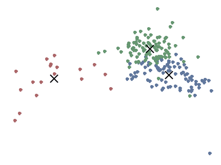

Projects
Updated (Aug 2018)
Legacy of Redlining - 2018
Segregation, Home OwnershipA Million Walks in the Park - 2017
Green Space, Social InteractionGhost Cities of China - 2017
Amenities, Urban Vitality
Digital Matatus - 2014
Informal Transit
Institutional Network Analysis - 2015
Networks
Crowd-Sourced Neighborhoods - 2014
Neighborhood Definition, Social Media Pollution Through China's Own Lens - 2015
Social Media, CensorshipData Action Project - 2015
Urban Vitality, Social Media